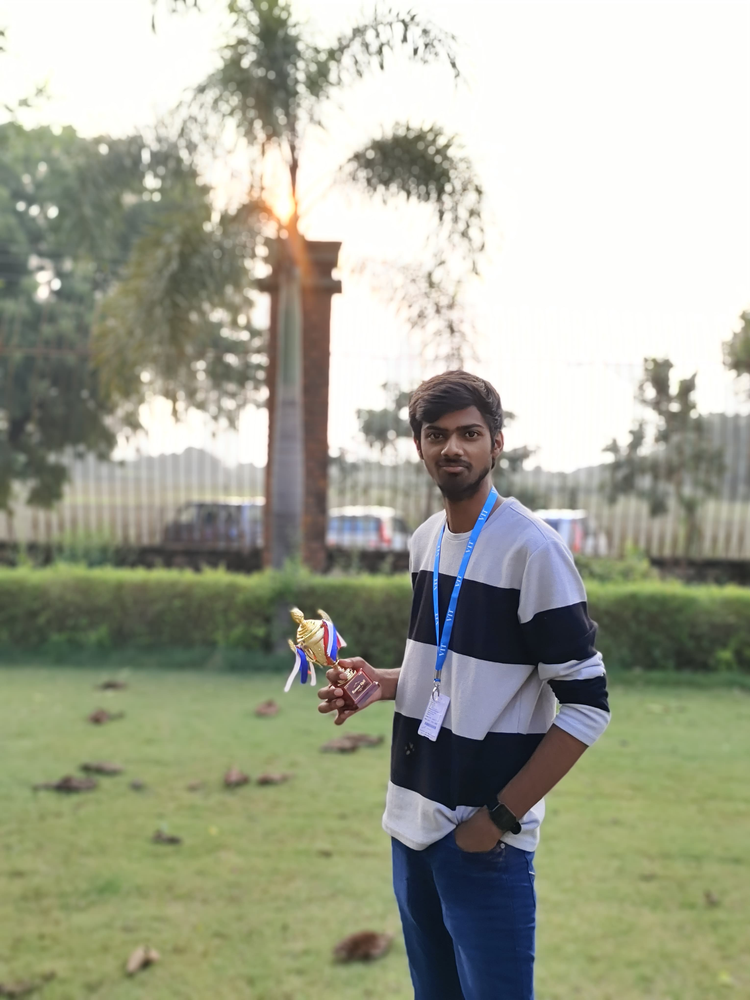
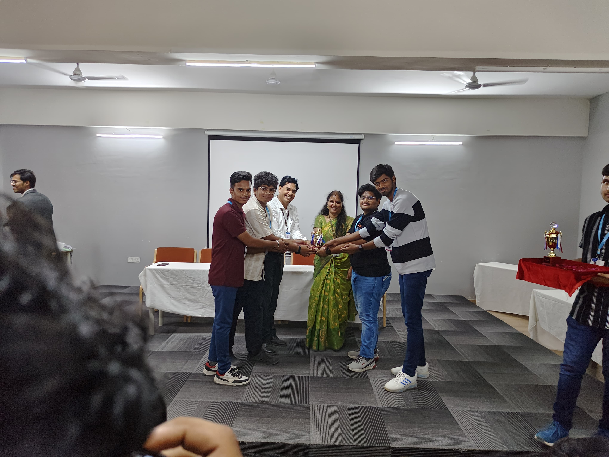
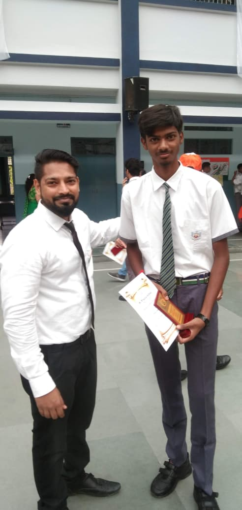
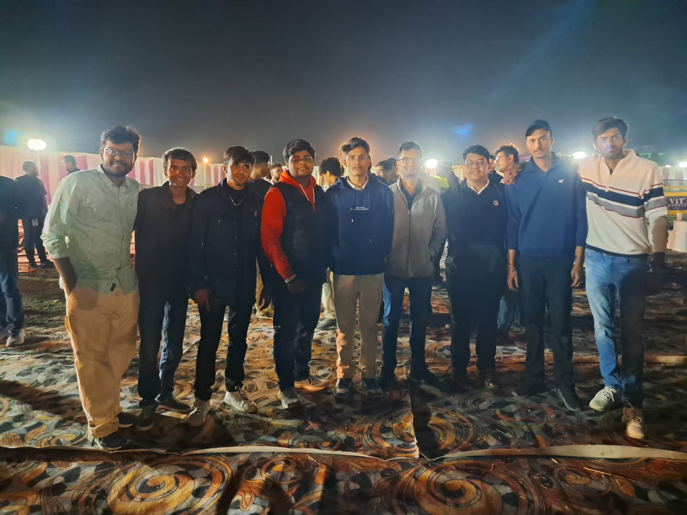
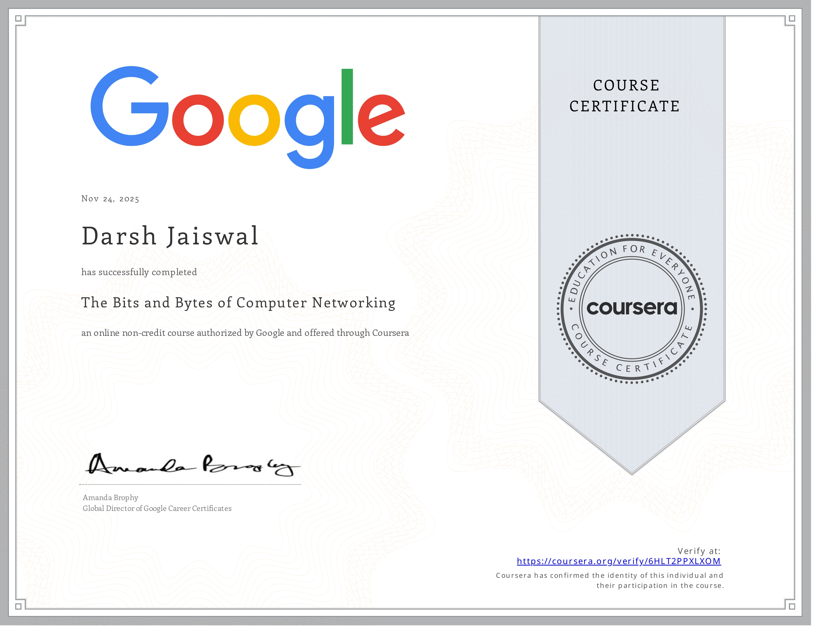
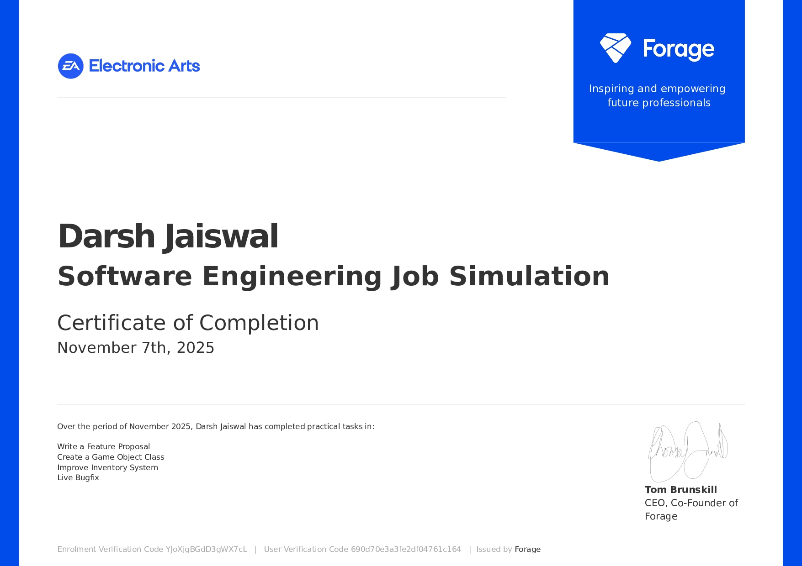
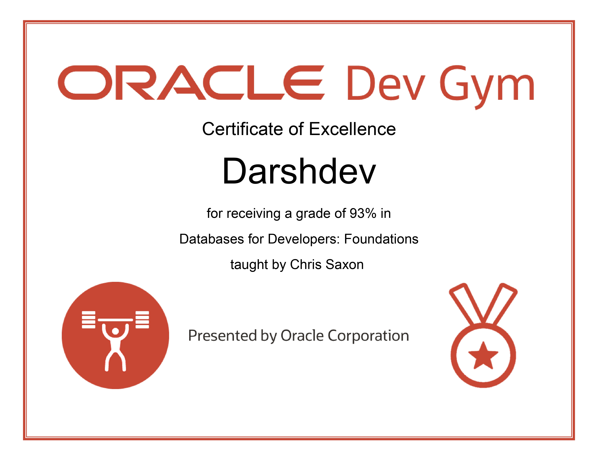
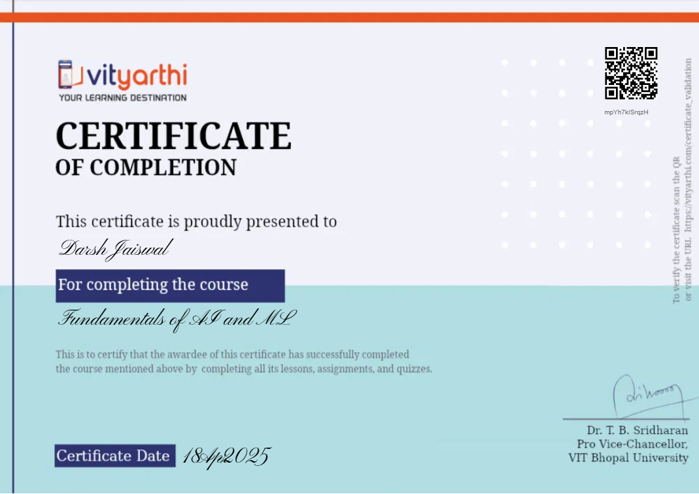
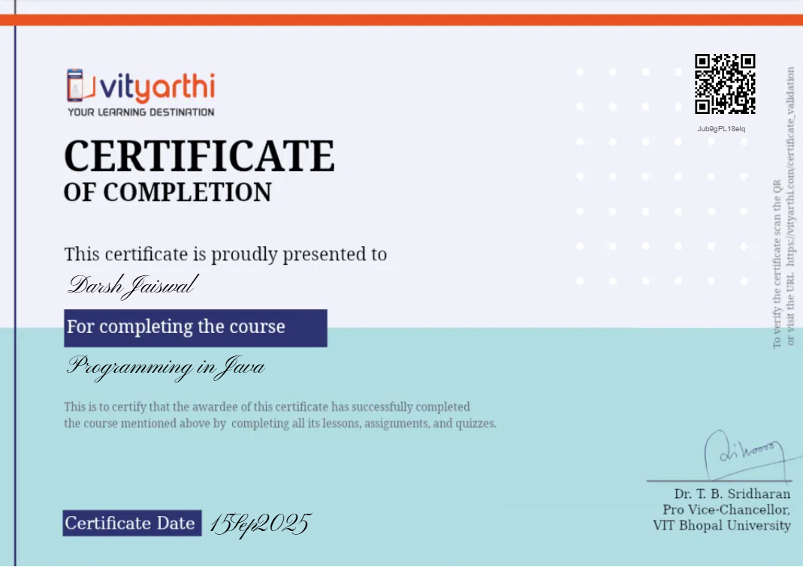

AI Fitness Rehabilitation System
Real-time posture analysis concept using pose detection, feedback, and guided exercise sessions.
CSE Student / AI, Web and Creative Tech
Exploring machine learning, web development, practical AI systems, and creative digital experiences with a builder's mindset.


Currently pursuing B.Tech in Computer Science Engineering from VIT Bhopal University, with strong interest and practical exposure in Data Structures, Machine Learning, Artificial Intelligence, and Web Development.
Skilled in developing real-world projects using technologies including Python, OpenCV, Firebase, and Linux environments. I am passionate about building innovative and AI-driven solutions that solve practical problems while delivering impactful user experiences.
Beyond academics and development, I am deeply interested in video editing, photography, cycling, music, and creative digital experiences. These interests help me bring creativity, aesthetics, and storytelling into technical projects and portfolio designs.
Real-time posture analysis concept using pose detection, feedback, and guided exercise sessions.
ML model concept for claim prediction using preprocessing, model training, and performance analysis.
File organization utility concept that sorts downloads into clear categories automatically.
A Solo Leveling inspired productivity interface that turns daily tasks into an RPG-style experience with ranks, gold, and inventory rewards.
Built with HTML5, CSS3, vanilla JavaScript, DOM manipulation, audio effects, and local storage for persistent progress.
An AI-powered travel assistant that generates structured day-by-day itineraries from a destination and travel vibe.
Uses Flutter for responsive UI, Google Gemini API for itinerary generation, and state management for multi-day trip saving.
A habit grid that visualizes consistency, tracks win rate, and makes daily streaks easier to maintain with clear progress graphs.
Includes secure Google sign-in, installable PWA support, Firebase integration, and time locking to prevent fake progress updates.


Bachelor in Computer Science and Engineering
Python, C++, Java, SQL
Data Structures and Algorithms, OOPs, DBMS
OpenCV, MediaPipe, PoseNet, Model Training
HTML, CSS, JavaScript
Git, Linux (Ubuntu VM), VS Code

Coursera / Google

Electronic Arts / Forage

Oracle Dev Gym

Vityarthi

Vityarthi